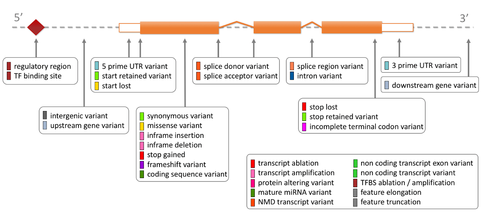

This function retrieves variant consequence types. For more details check Ensembl Variation - Calculated variant consequences.
Arguments
- verbose
Whether to be chatty about the underlying requests.
- warnings
Whether to print warnings.
Value
A tibble, each row being a variant consequence,
of four variables:
- SO_accession
Sequence Ontology accession, e.g.,
'SO:0001626'.- SO_term
Sequence Ontology term, e.g.,
'incomplete_terminal_codon_variant'.- label
Display term.
- description
Sequence Ontology description.
Details
A rule-based approach is used to predict the effects that each allele of a variant may have on each transcript. These effects are variant consequences, that are catalogued as consequence terms, defined by the Sequence Ontology.
See below a diagram showing the location of each display term relative to the transcript structure:

Ensembl REST API endpoints
get_variant_consequence_types makes GET requests to
/info/variation/consequence_types.
Examples
# Retrieve variant consequence types
get_variant_consequences()
#> # A tibble: 41 × 4
#> SO_accession SO_term label description
#> <chr> <chr> <chr> <chr>
#> 1 SO:0001566 regulatory_region_variant regulatory regio… A sequence…
#> 2 SO:0001782 TF_binding_site_variant TF binding site A sequence…
#> 3 SO:0001632 downstream_gene_variant downstream gene … A sequence…
#> 4 SO:0001574 splice_acceptor_variant splice acceptor … A splice v…
#> 5 SO:0001792 non_coding_transcript_exon_variant non coding trans… A sequence…
#> 6 SO:0001575 splice_donor_variant splice donor var… A splice v…
#> 7 SO:0001628 intergenic_variant intergenic varia… A sequence…
#> 8 SO:0001891 regulatory_region_amplification regulatory regio… A feature …
#> 9 SO:0001567 stop_retained_variant stop retained va… A sequence…
#> 10 SO:0001580 coding_sequence_variant coding sequence … A sequence…
#> # ℹ 31 more rows